Двенадцать звеньев цепочки
Листайте вбок — слева направо идёт путь клиента: от первого сообщения до закрытого заказа. «Подробнее» открывает экраны звена и порядок работы.
Зелёное работает, жёлтое ждёт вас, синее в работе, серое отодвинуто вашим решением. «Ждёт вас» значит, что код написан и проверен, а включить его может только владелец: телефон, аккаунт или документ.
Звено 1. Реклама и бренд
ждёт васБренд у компании был — знак, фургоны, визитка, — но нигде не записан: цвета на макетах расходились, а знак набирали шрифтом там, где его положено ставить файлом. Теперь он зафиксирован и по нему может работать любой подрядчик.
- Брендбук из 11 разделов: знак, охранное поле, минимальный размер, цвета, шрифт, голос.
- 24 готовых макета для Facebook и Instagram — лента, сторис, обложка, аватар, в двух языках.
- Чертежи оклейки машин и ТЗ швейнику на единую форму бригады.
- 16 листов печати: визитка, смета, счёт, лист приёмки, бланк письма, коммерческое предложение.
- Текст карточки Google написан целиком — название, категории, описание, ответы на отзывы.
Что здесь ждёт вас. Документ о регистрации. Google и Meta сверяют название буква в букву с бумагой, поэтому ни карточку компании, ни рекламный кабинет не завести, пока не известно, как именно компания записана в документе. Всё остальное готово и лежит по ссылке.
Звенья 2–3. Сайт и расчёт до звонка
работаетПервое, что видит человек, — ролик о компании: 45 секунд, запускается сам, без звука до нажатия. Дальше он может посчитать переезд сам, не оставляя телефон.
- Открывает fixlihome.co.il — страница на его языке, русском или иврите.
- Нажимает «Рассчитать стоимость» и отмечает крупные вещи по комнатам — знаками, не списком.
- Отмеченное сразу грузится в машину на картинке, а сводка называет заказ одной строкой.
- Видит вилку с НДС, из чего она складывается, сколько часов и сколько человек приедет.
- Хочет — оставляет заявку, и она приходит в систему с пометкой «заявка с сайта».
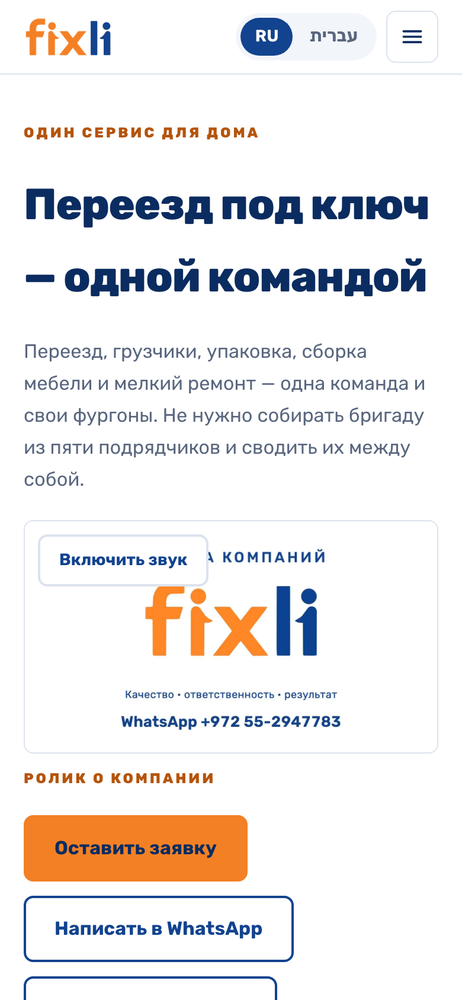
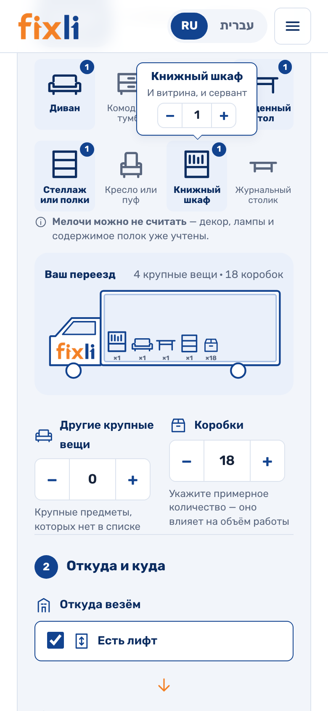
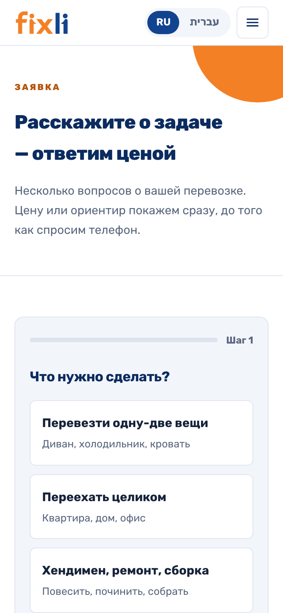

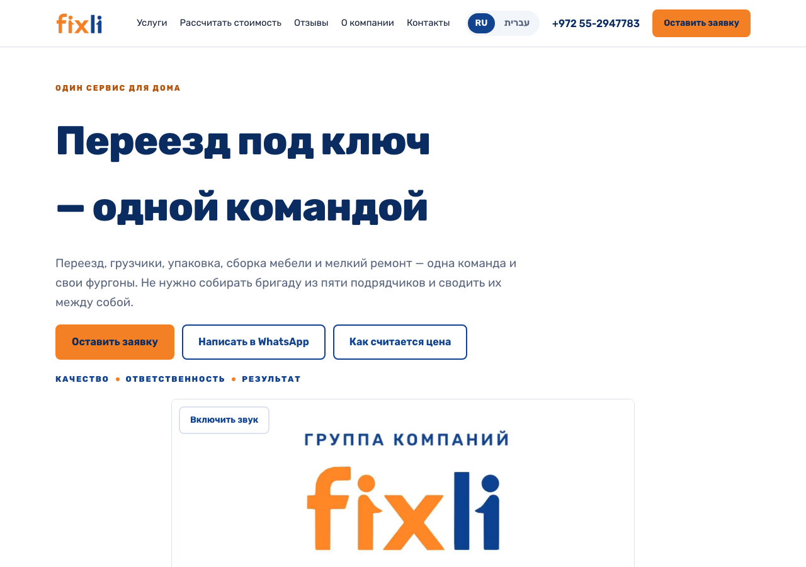
Чего здесь сознательно нет: блока «наши работы» с фотографиями объектов. Ролик нарисован, а настоящих кадров с наших смен у нас пока нет — это в списке ниже.
Звено 4. Клиент пишет — и получает ответ сразу
ждёт васТелеграм-бот проводит человека по тем же вопросам, что и сайт, и называет ту же цену — цифры считает один и тот же код, разойтись они физически не могут. Ниже — дословно то, что видит клиент.
Экран цены в Telegram-боте — дословно, как его видит клиент. Те же числа, что на сайте: считает один и тот же код.
Что здесь ждёт вас. Ссылку на бота нельзя давать клиентам, пока Игорь не вошёл в систему: бот обещает ответ человека, а человек смотрит в систему. Приветствие в WhatsApp — 15 минут на телефоне, инструкция уже написана и открывается кнопкой ниже.
Звенья 5–6. Обращение и заказ
работает- Система открывается экраном «Сегодня» — не меню, а тем, что горит: кому не ответили.
- Видно слова клиента целиком и откуда он пришёл — по метке объявления, а не «кажется, с Фейсбука».
- Одна кнопка — и обращение становится заказом: адреса, этажи, дата, сумма.
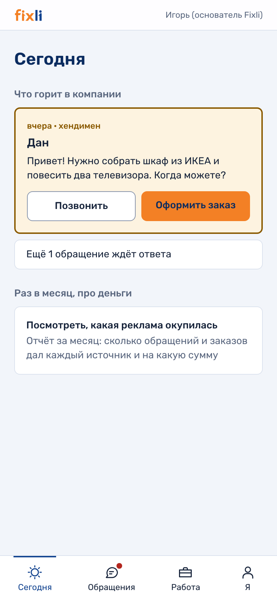
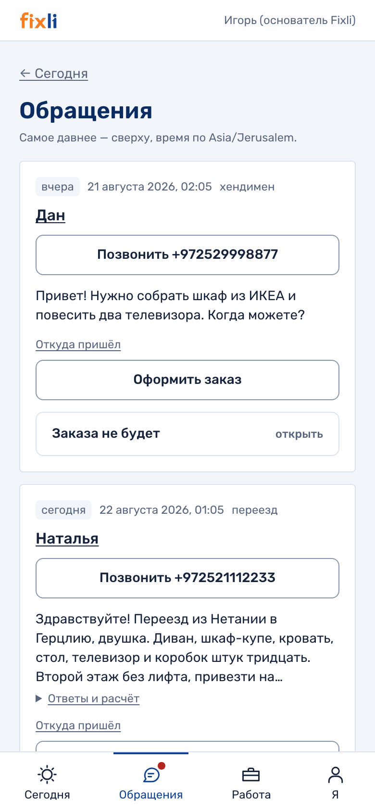

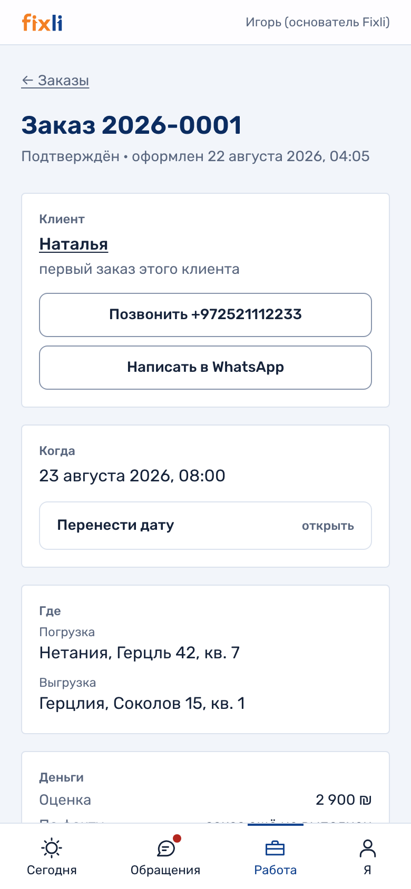
Звено 7. Смена, бригада и одна кнопка
работает- В разделе «Работа» — заказы и смены рядом, вкладками, плюс месяц с точками по дням.
- Диспетчер собирает смену: кто едет, кем в бригаде и за какие деньги.
- Пока смена черновик, работники о ней не знают — и это специально: собранная наполовину смена не должна выглядеть готовой.
- Кнопка «Объявить и отправить» — и смена уходит людям в Telegram.
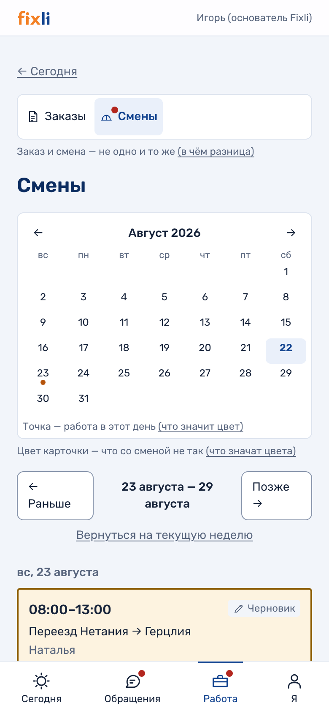
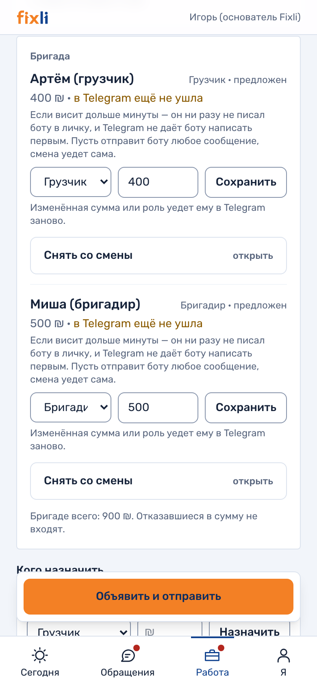
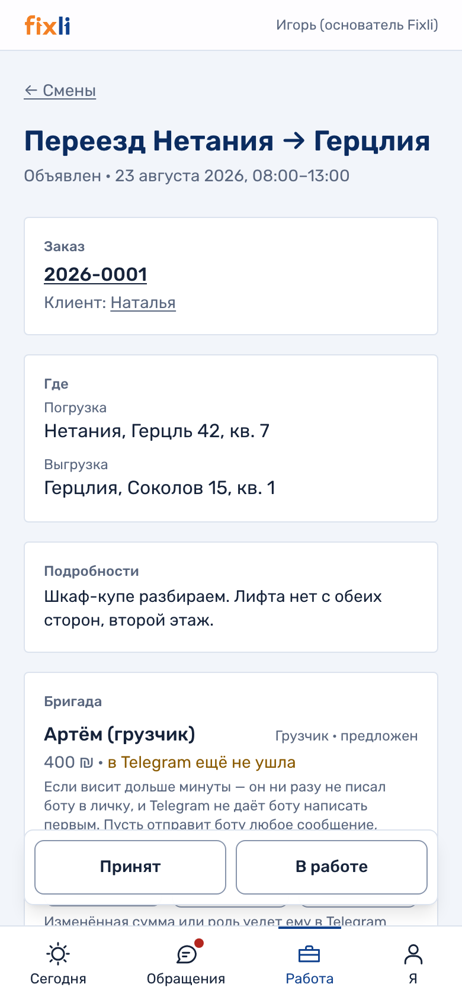
Звено 8. Смена в телефоне работника
работаетЭто то, что 21 августа приняли на живой смене. Работнику приходит сообщение в Telegram — дословно такое:
Сообщение работнику — дословно. Четвёртая кнопка появляется, когда воркеру известен адрес системы; на боевой он задан.
- Он отвечает кнопкой — «Принял» или «Не смогу». Ни кода, ни пароля, ни приложения из магазина.
- Кнопка «Открыть смену» открывает приложение внутри Telegram: когда → маршрут → работа.
- Адрес — капсула: нажатие ведёт в Waze, Google или Apple Maps, либо копирует адрес.
- Чек-лист лежит внутри адресов: пункты по погрузке под погрузкой, по выгрузке — под выгрузкой.
- Отметка ставится даже без сети: висит подписью «не отправлено» и доезжает, когда сеть вернулась.
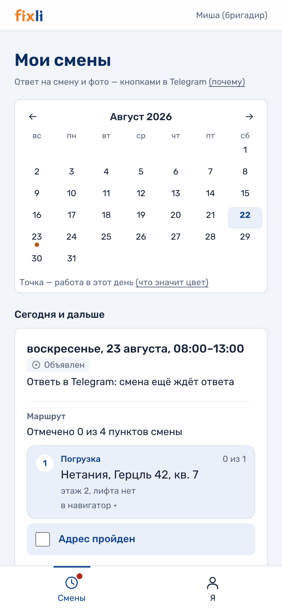
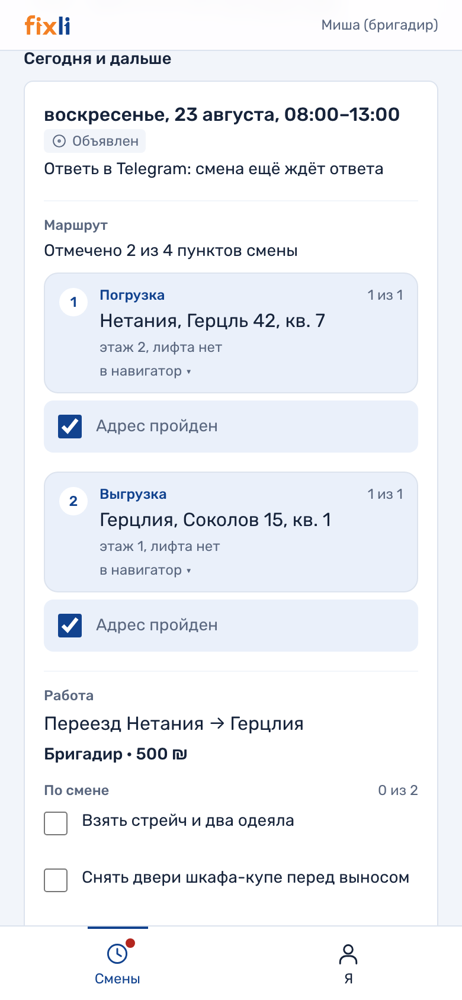

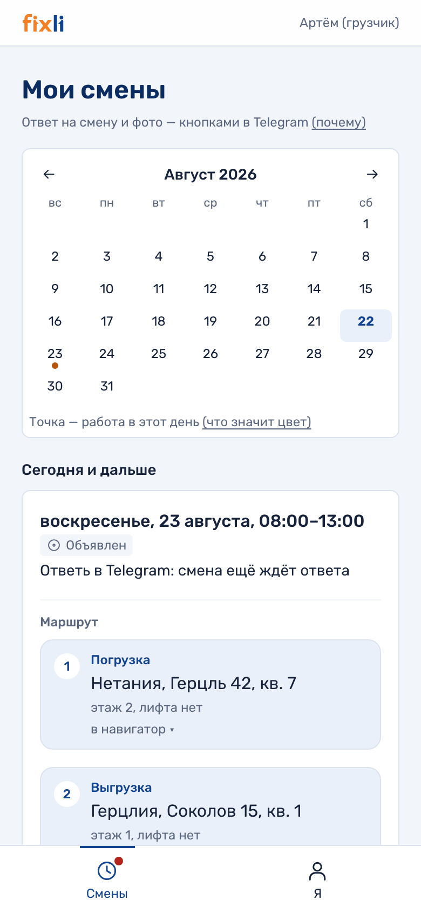
Почему это важнее, чем выглядит. Грузчик и бригадир — не должности, а роли в этой смене: сегодня человек бригадир, завтра в чужой смене грузчик. Система считает уровень по смене, а не по человеку.
Звенья 9–10. Отчёт с объекта и деньги
работает- Бригадир закрывает смену отчётом: что сделано и что пошло не так.
- Замечание про повреждение остаётся в системе — на случай спора с клиентом через месяц.
- Заказ закрывается по факту: сумма может отличаться от оценки, и видно, на сколько.
- Раз в месяц один экран отвечает на вопрос «какая реклама окупилась».
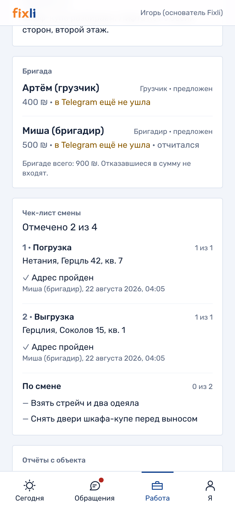
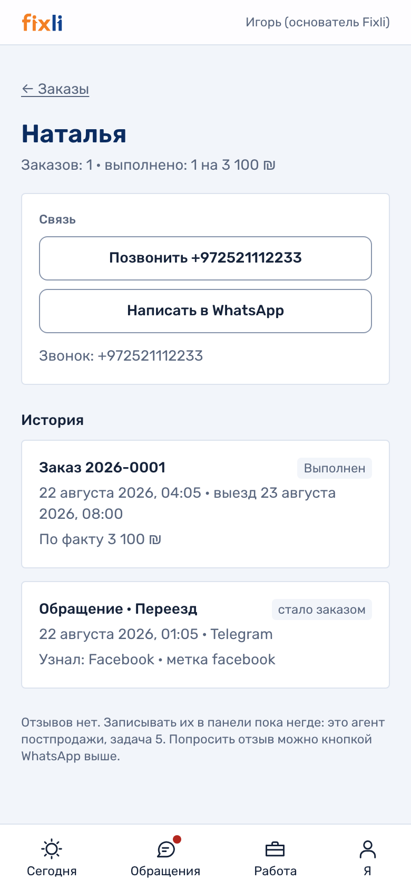
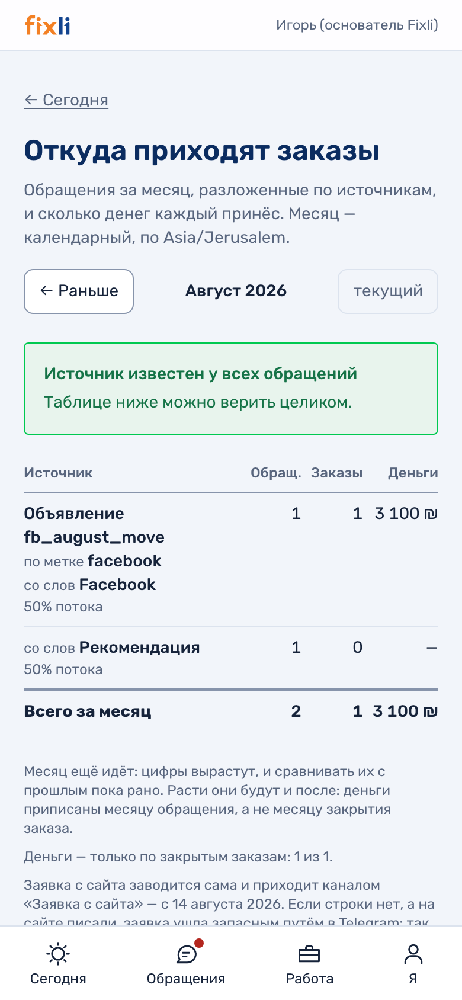
Чего здесь сознательно нет: фотографий из приложения. Сейчас бригада присылает их в чат бота, и они попадают в отчёт. Загрузка прямо из «Моих смен» — следующая работа по этому звену.
Звено 11. Отзыв после работы
отодвинутоОтодвинуто вашим решением: отдельный агент, который пишет клиенту после работы, при нынешнем числе заказов не окупается. Мы с этим согласны и кода не писали.
- Место в системе есть: отзыв — такая же сущность, как заказ и смена.
- У клиента одна карточка со всей его историей, и отзыв ложится в неё, а не в отдельную таблицу.
- Согласие на публикацию — отдельный признак, поэтому отзыв можно будет показать на сайте, ничего не переделывая.
Почему это важно сейчас, а не потом. Отзывы — то, чем компания уже сильна: 60 рекомендаций и 653 комментария на странице в Facebook. Когда заказов станет больше и собирать их вручную станет некогда, переделывать систему не придётся.
Звено 12. Поиск и интервью работников
отодвинутоОтодвинуто вашими словами 9 августа: «людей мы найдём». Договорились вернуться к этому весной, перед сезоном. Кода агентов нет — и это решение, а не задолженность.
- Объявления по четырём ролям на русском и иврите написаны, реестр групп для публикации собран.
- Сценарий первичного интервью и критерии отсева написаны.
- Модель данных под наём спроектирована целиком: человек — одна запись с ролями во времени, поэтому кандидат, ставший работником, не заводится вторым лицом.
Что это значит на практике. Когда задача вернётся, переписывать не придётся ничего: приём работника уже сегодня идёт по этой модели — карточка человека, приглашение в Telegram, роль в смене.